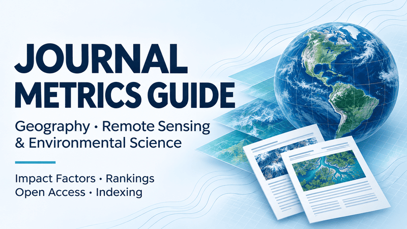

地理、遥感与环境科学期刊指标对照
主表与 Nature 子刊分别按 2025 年影响因子（IF）降序排列。左右滑动可查看全部列。

ESCI 如论文将用于毕业或职称评审，请在投稿前确认所在单位是否认可 ESCI 收录。
OA 开放获取期刊可能收取文章处理费（APC），金额及减免以期刊说明为准。
| 序号 | 期刊名称 | 学科 | 2025 IF | 2024 IF | 2025 中科院 | 2026 新锐 | OA 模式 | 收录 |
|---|---|---|---|---|---|---|---|---|
| 1 | IEEE Geoscience and Remote Sensing Magazine | 地球科学 | 17.1 | 16.4 | 1 区 Top | 1 区 Top | Hybrid | SCIE |
| 2 | One Earth | 环科与生态 | 15.5 | 15.3 | 1 区 Top | 1 区 Top | Hybrid | SCIE |
| 3 | Earth System Science Data | 地球科学 | 13.6 | 13.4 | 1 区 Top | 1 区 Top | OA | SCIE |
| 4 | Sustainable Cities and Society | 工程技术 | 13.3 | 12 | 1 区 Top | 1 区 Top | Hybrid | SCIE |
| 5 | ISPRS Journal of Photogrammetry and Remote Sensing | 地球科学 | 12.9 | 12.2 | 1 区 Top | 1 区 Top | Hybrid | SCIE |
| 6 | Water Research | 环科与生态 | 12.8 | 12.4 | 1 区 Top | 1 区 Top | Hybrid | SCIE |
| 7 | Global Change Biology | 环科与生态 | 12.5 | 12 | 1 区 Top | 1 区 Top | Hybrid | SCIE |
| 8 | Remote Sensing of Environment | 地球科学 | 12.3 | 11.4 | 1 区 Top | 1 区 Top | Hybrid | SCIE |
| 9 | Environmental Science & Technology | 环科与生态 | 12.2 | 11.3 | 1 区 Top | 1 区 Top | Hybrid | SCIE |
| 10 | Environmental Impact Assessment Review | 社会学 | 12.2 | 11.2 | 1 区 Top | 1 区 Top | Hybrid | SCIE |
| 11 | Landscape and Urban Planning | 环科与生态 | 11.5 | 9.2 | 1 区 Top | 1 区 Top | Hybrid | SCIE / SSCI |
| 12 | Earth-Science Reviews | 地球科学 | 11.3 | 10 | 1 区 Top | 1 区 Top | Hybrid | SCIE |
| 13 | Journal of Remote Sensing | 地球科学 | 11 | 6.8 | 1 区 Top | 1 区 Top | OA （2028.1.1 之前免费） | ESCI |
| 14 | Journal of Cleaner Production | 环科与生态 | 10.7 | 10 | 1 区 Top | 1 区 Top | Hybrid | SCIE |
| 15 | Resources, Conservation and Recycling | 环科与生态 | 10.4 | 10.9 | 1 区 Top | 1 区 Top | Hybrid | SCIE |
| 16 | Computers and Electronics in Agriculture | 农林科学 | 10.3 | 8.9 | 1 区 Top | 1 区 Top | Hybrid | SCIE |
| 17 | Geography and Sustainability | 环科与生态 | 9.8 | 8 | 1 区 Top | 1 区 Top | OA | ESCI |
| 18 | The Proceedings of the National Academy of Sciences | 综合 | 9.5 | 9.1 | 1 区 Top | 1 区 Top | OA | SCIE |
| 19 | IEEE Transactions on Geoscience and Remote Sensing | 地球科学 | 9.4 | 8.6 | 1 区 Top | 1 区 Top | Hybrid | SCIE |
| 20 | Communications Earth & Environment | 地球科学 | 9.3 | 8.9 | 1 区 Top | 1 区 Top | OA | SCIE |
| 21 | Resources Environment and Sustainability | 环科与生态 | 9.2 | 7.8 | 1 区 Top | 1 区 Top | OA | ESCI |
| 22 | Computers, Environment and Urban Systems | 地球科学 | 8.9 | 8.3 | 1 区 Top | 1 区 Top | Hybrid | SSCI |
| 23 | Ecological Indicators | 环科与生态 | 8.7 | 7.4 | 1 区 Top | 1 区 Top | OA | SCIE |
| 24 | Earths Future | 地球科学 | 8.5 | 8.2 | 1 区 Top | 1 区 Top | OA | SCIE |
| 25 | International Journal of Applied Earth Observation and Geoinformation | 地球科学 | 8.2 | 8.6 | 1 区 Top | 1 区 Top | OA | SCIE |
| 26 | Environmental Research | 环科与生态 | 8.2 | 7.7 | 2 区 | 2 区 Top | Hybrid | SCIE |
| 27 | Field Crops Research | 农林科学 | 7.9 | 6.4 | 1 区 Top | 1 区 Top | Hybrid | SCIE |
| 28 | Agricultural Water Management | 农林科学 | 7.8 | 6.5 | 1 区 Top | 1 区 Top | OA | SCIE |
| 29 | Urban Climate | 工程技术 | 7.5 | 6.9 | 2 区 | 2 区 Top | Hybrid | SCIE |
| 30 | Applied Geography | 地球科学 | 7.4 | 5.4 | 2 区 Top | 1 区 Top | Hybrid | SSCI |
| 31 | AGU Advances | 地球科学 | 7.4 | 6.6 | 1 区 Top | 1 区 Top | OA | SCIE |
| 32 | Journal of Hydrology | 地球科学 | 7.3 | 6.3 | 1 区 Top | 1 区 Top | Hybrid | SCIE |
| 33 | Environmental Pollution | 环科与生态 | 7.2 | 7.3 | 2 区 | 2 区 Top | Hybrid | SCIE |
| 34 | Weather and Climate Extremes | 地球科学 | 7.2 | 6.9 | 1 区 Top | 1 区 Top | OA | SCIE |
| 35 | Scientific Data | 综合 | 7.2 | 6.9 | 2 区 | 2 区 Top | OA | SCIE |
| 36 | Science of Remote Sensing | 地球科学 | 7.1 | 5.2 | 2 区 | 2 区 | OA | ESCI |
| 37 | Cities | 经济学 | 7 | 6.6 | 1 区 Top | 1 区 Top | OA | SSCI |
| 38 | GIScience & Remote Sensing | 地球科学 | 6.8 | 6.9 | 1 区 Top | 1 区 Top | OA | SCIE |
| 39 | Journal of Geovisualization and Spatial Analysis | 地球科学 | 6.8 | 6.8 | 1 区 Top | 1 区 Top | Hybrid | ESCI |
| 40 | European Journal of Agronomy | 农林科学 | 6.7 | 5.5 | 1 区 Top | 1 区 Top | Hybrid | SCIE |
| 41 | Agricultural and Forest Meteorology | 农林科学 | 6.6 | 5.7 | 1 区 Top | 1 区 Top | Hybrid | SCIE |
| 42 | Catena | 农林科学 | 6.6 | 5.7 | 1 区 Top | 1 区 Top | Hybrid | SCIE |
| 43 | IEEE Journal of Selected Topics in Applied Earth Observations and Remote Sensing | 地球科学 | 6.3 | 5.3 | 2 区 | 2 区 Top | OA | SCIE |
| 44 | Agricultural Systems | 农林科学 | 6.2 | 6.1 | 1 区 Top | 1 区 Top | Hybrid | SCIE |
| 45 | Water Resources Research | 地球科学 | 6 | 5 | 2 区 Top | 2 区 Top | OA | SCIE |
| 46 | International Journal of Geographical Information Science | 地球科学 | 5.9 | 5.1 | 1 区 Top | 1 区 Top | Hybrid | SCIE / SSCI |
| 47 | Journal of Geographical Sciences | 地球科学 | 5.7 | 5.2 | 2 区 | 1 区 Top | Hybrid | SCIE |
| 48 | Journal of Hydrology-Regional Studies | 地球科学 | 5.6 | 5 | 2 区 Top | 2 区 Top | OA | SCIE |
| 49 | Advances in Climate Change Research | 地球科学 | 5.6 | 5.2 | 1 区 Top | 2 区 | OA | SCIE |
| 50 | Science China-Earth Sciences | 地球科学 | 5.5 | 5.8 | 1 区 Top | 1 区 Top | Hybrid | SCIE |
| 51 | Geo-Spatial Information Science | 地球科学 | 5.4 | 5.5 | 2 区 | 1 区 | OA | SCIE |
| 52 | International Journal of Digital Earth | 地球科学 | 5.4 | 4.9 | 2 区 | 2 区 Top | OA | SCIE |
| 53 | Environmental Research Letters | 环科与生态 | 5.4 | 5.6 | 2 区 | 2 区 Top | OA | SCIE |
| 54 | Environmental Modelling & Software | 环科与生态 | 5.2 | 4.6 | 2 区 | 2 区 | Hybrid | SCIE |
| 55 | Geophysical Research Letters | 地球科学 | 5 | 4.6 | 2 区 Top | 2 区 Top | OA | SCIE |
| 56 | Geoscientific Model Development | 地球科学 | 4.9 | 4.9 | 2 区 | 2 区 | OA | SCIE |
| 57 | Annals of GIS | 地球科学 | 4.8 | 3.3 | 3 区 | 2 区 | OA | ESCI |
| 58 | IEEE Geoscience and Remote Sensing Letters | 地球科学 | 4.7 | 4.4 | 3 区 | 3 区 | Hybrid | SCIE |
| 59 | GEOLOGY | 地球科学 | 4.6 | 4.6 | 1 区 Top | 1 区 Top | OA | SCIE |
| 60 | Remote Sensing | 地球科学 | 4.3 | 4.1 | 2 区 | 2 区 | OA | SCIE |
| 61 | Annals of the American Association of Geographers | 社会学 | 3.8 | 2.9 | 2 区 Top | 2 区 Top | Hybrid | SSCI |
| 62 | Geographical Analysis | 地球科学 | 2.4 | 4.3 | 3 区 | 3 区 | Hybrid | SSCI |
| 63 | Transactions in GIS | 地球科学 | 2.4 | 2.3 | 3 区 | 3 区 | Hybrid | SSCI |
| Nature 子刊 | ||||||||
| 1 | Nature Reviews Earth & Environment | 地球科学 | 74.1 | 71.5 | 1 区 Top | 1 区 Top | SCIE | |
| 2 | Nature Sustainability | 环科与生态 | 32.1 | 27.1 | 1 区 Top | 1 区 Top | SCIE / SSCI | |
| 3 | Nature Machine Intelligence | 计算机 | 29.8 | 23.9 | 1 区 Top | 1 区 Top | SCIE | |
| 4 | Nature Climate Change | 地球科学 | 26.9 | 27.1 | 1 区 Top | 1 区 Top | SCIE / SSCI | |
| 5 | Nature Food | 农林科学 | 24.7 | 21.9 | 1 区 Top | 1 区 Top | SCIE | |
| 6 | Nature Geoscience | 地球科学 | 20.6 | 21.9 | 1 区 Top | 1 区 Top | SCIE | |
| 7 | Nature Communications | 综合 | 18.1 | 15.7 | 1 区 Top | 1 区 Top | SCIE | |